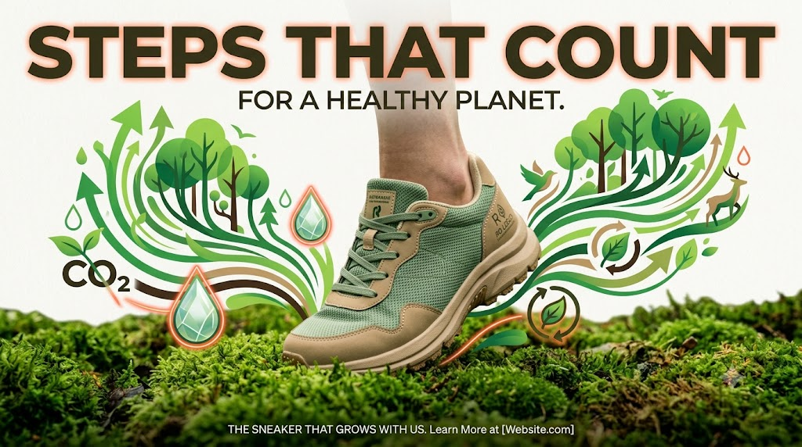
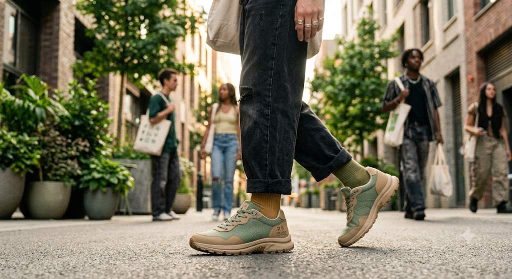
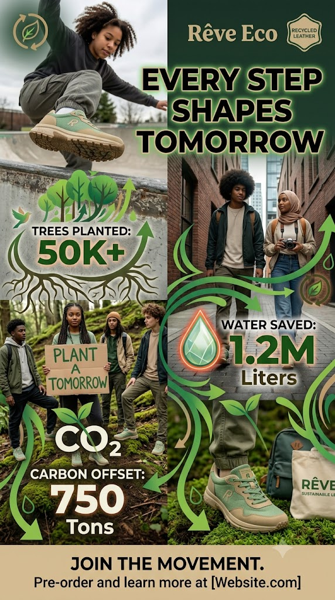
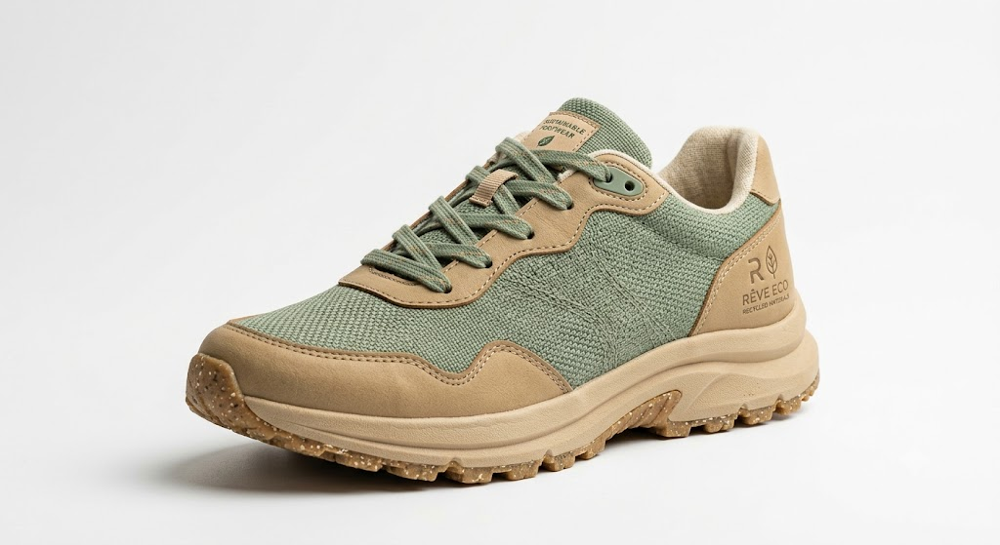
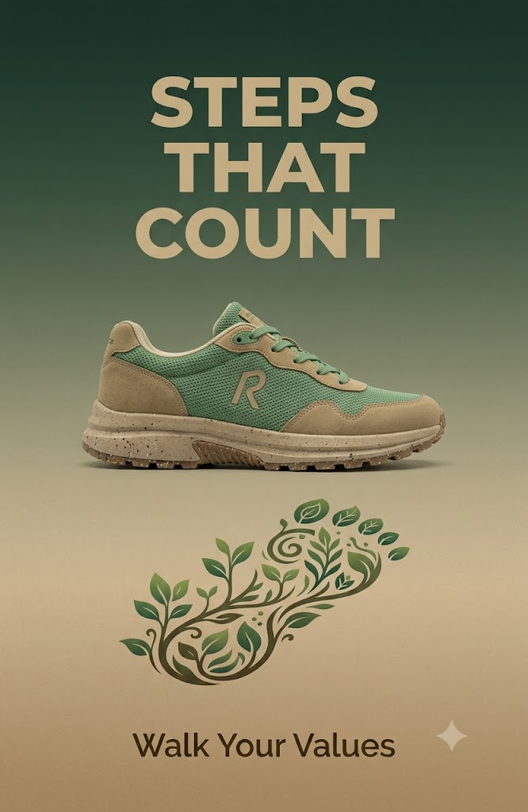

Sustainable sneakers designed for style, comfort, and the planet. Every step creates measurable impact.
Trusted by teams focused on

Our Mission
At Rêve Eco, we believe footwear should leave a positive footprint. Every pair is crafted from recycled ocean plastics, organic cotton, and plant-based materials — without sacrificing the style and comfort your generation demands.
From recycled material uppers to cork and natural rubber soles, every component is chosen to minimize environmental impact while maximizing performance and aesthetics.

Our Impact
Trees Planted
Through our reforestation partners across 12 countries
Liters of Water Saved
Compared to conventional shoe manufacturing processes
Tons of CO₂ Offset
Carbon neutral operations since day one of production

The Movement
Join a community of changemakers. Skaters, activists, dreamers — united by the belief that what you wear can change the world.
Join the Movement
The Shoe
Made from 12 recycled plastic bottles, breathable and lightweight.
Post-consumer plastic bottles are collected, cleaned, and shredded into flakes. These flakes are melted and extruded into fine polyester yarn, which is then knitted into a breathable, durable mesh fabric. Each pair diverts 12 plastic bottles from landfills and oceans.
Reduces petroleum use by 75% compared to virgin polyester. Saves 2.5 kg of CO₂ emissions per pair. Prevents ocean plastic pollution and reduces landfill waste by giving new life to discarded materials.
Natural rubber and cork composite. Grippy, durable, and biodegradable.
Harvested from sustainably managed rubber tree plantations using a non-destructive tapping process. Combined with ground cork oak bark — a renewable resource that regrows after harvest — and bonded with a natural latex binder. The result is a flexible, shock-absorbing sole that fully biodegrades at end of life.
100% biodegradable within 10 years. Cork harvesting actually helps cork oak forests absorb 3–5× more CO₂. Zero synthetic plastics or petrochemicals. Rubber plantations support local farming communities and prevent deforestation.
Vegetable-tanned, responsibly sourced leather accents in natural tan.
Sourced from LWG Gold-rated tanneries that use vegetable tanning — an ancient process using tree bark extracts (mimosa, chestnut, quebracho) instead of toxic chromium salts. The hides are by-products of the food industry, ensuring no animal is raised solely for leather. Each piece is hand-finished with natural oils for a rich, unique patina.
Eliminates 90% of hazardous chemicals used in conventional chrome tanning. Wastewater is fully biodegradable. Uses 40% less water than standard tanning. Supports zero-waste supply chains by upcycling food industry by-products.
GOTS-certified organic cotton interior for all-day comfort.
Grown without synthetic pesticides, herbicides, or GMO seeds on certified organic farms. The cotton is hand-picked to preserve fiber length and quality, then spun into a soft, breathable jersey knit using low-impact dyes. GOTS (Global Organic Textile Standard) certified at every stage from farm to finished fabric.
Uses 91% less water and 62% less energy than conventional cotton. Zero toxic pesticides protects soil health, biodiversity, and farmworker safety. Organic farming builds healthy soils that act as carbon sinks, sequestering up to 0.5 tonnes of CO₂ per hectare annually.

Be the first to know about new drops, sustainability stories, and exclusive offers. No spam — just steps that count.